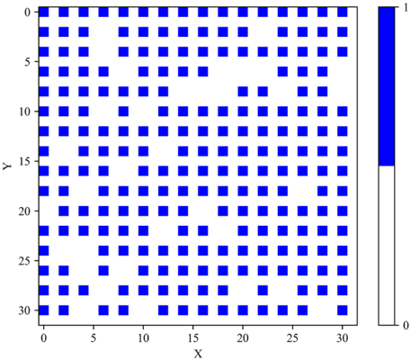
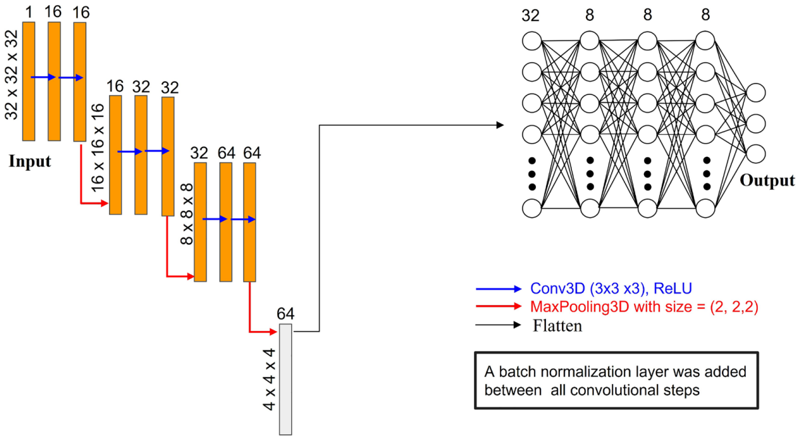

Autores: Iman Peivaste, Saba Ramezani, Ghasem Alahyarizadeh, Reza Ghaderi, Ahmed Makradi, Salim Belouettar
Revista: Scientific Reports 13, 50893 (2023), DOI: 10.1038/s41598-023-50893-9
Idea central
Usar 3D CNN entrenados (tANN = trained artificial neural network) como modelos surrogate de simulaciones MD para predecir, en pocos ms, propiedades mecánicas de configuraciones atómicas perfectas y defectuosas (con vacancias, dislocaciones, GBs, voids…).
Avance respecto al estado del arte previo: los métodos eran 2D image-based o descriptor-based; este trabajo introduce el input 3D voxelizado que preserva la información atómica completa.
Pipeline
- Generar dataset con MD (LAMMPS) — estructuras con y sin defectos.
- Voxelizar cada configuración en una grilla 3D → input al CNN.
- Calcular propiedades target (típicamente constantes elásticas) por MD → ground truth.
- Entrenar 3D CNN para regresar de voxel grid → propiedades.
- Validar sobre configuraciones no vistas.
Resultados clave
- RMSE < 0.65 GPa prediciendo constantes elásticas.
- Speed-up de 185× a 2100× vs MD tradicional.
- Capaz de aceptar configuraciones con defectos arbitrarios (no solo cristal perfecto).
- Demuestra que 3D > 2D > descriptores para esta tarea.
Por qué importa para vos
- Justifica el uso de voxel 3D input para problemas de MD → ML.
- Predece propiedades post-irradiación (con defectos) — muy alineado con tu trabajo de cascadas Cu-Ni.
- Es la referencia más directa para defender un pipeline "MD → voxel → CNN → módulo elástico".
Conexiones
- Sucesor metodológico para defectos: [[CNN3D_constantes_elasticas_nanoporosos_Zorkaltsev_2025]] (mismo enfoque 3D CNN, pero aplicado a nanoporosos).
- Comparable filosóficamente con [[CGCNN_cristales_Xie_Grossman_2018]] (también predice propiedades, pero con grafos en lugar de voxels) y con [[CarNet_tensores_cartesianos_Chen_2025]] (tensores cartesianos).
- Útil para citar junto a [[MD_cascadas_CuNi_irradiacion_Wei_2025]] como motivación de "MD es caro → necesitamos surrogates".
- Si combinás con [[voxel_voids_nucleacion_Hemani_2014]] tenés voxelización clásica → voxel + ML moderno (este paper).
Figuras del Paper (8)
Sin caption
Figura en pagina 1.

Figure 1. Comparative analysis of elastic constants calculation and prediction Using MD and tANNs for Varying Vacancy Percentages. The figure showcases the remarkable performance of our framework across different vacancy percentages, highlighting its accuracy even beyond the training data range.
Figure 1. Comparative analysis of elastic constants calculation and prediction Using MD and tANNs for Varying Vacancy Percentages. The figure showcases the remarkable performance of our framework across different vacancy percentages, highlighting its accuracy even beyond the training data range.

Figure 2. Comparative analysis of elastic constants calculation and prediction Using MD and tANNs for varying number of voids. The figure showcases the remarkable performance of our framework across different types of defects.
Figure 2. Comparative analysis of elastic constants calculation and prediction Using MD and tANNs for varying number of voids. The figure showcases the remarkable performance of our framework across different types of defects.

Figure 3. Effect of processor count on computation time for a defect-free perfect structure. The graph depicts how computation time decreases with an increasing number of processors, yet it plateaus at a lower limit of 7 s, indicating a minimum achievable computation time.
Figure 3. Effect of processor count on computation time for a defect-free perfect structure. The graph depicts how computation time decreases with an increasing number of processors, yet it plateaus at a lower limit of 7 s, indicating a minimum achievable computation time.

Figure 4. Visualization of Atomistic Structures in a 3D Array: Atoms represented by '1' and vacancies by '0' within a 3D grid.
Figure 4. Visualization of Atomistic Structures in a 3D Array: Atoms represented by '1' and vacancies by '0' within a 3D grid.

Figure 5. Visualization of Atomistic Structures in a 2D Array (z = 0): Atoms represented by '1' and vacancies by '0' within a 3D grid.
Figure 5. Visualization of Atomistic Structures in a 2D Array (z = 0): Atoms represented by '1' and vacancies by '0' within a 3D grid.

Figure 6. The neural network structure employed in this research.
Figure 6. The neural network structure employed in this research.
Sin caption
Figura en pagina 14.